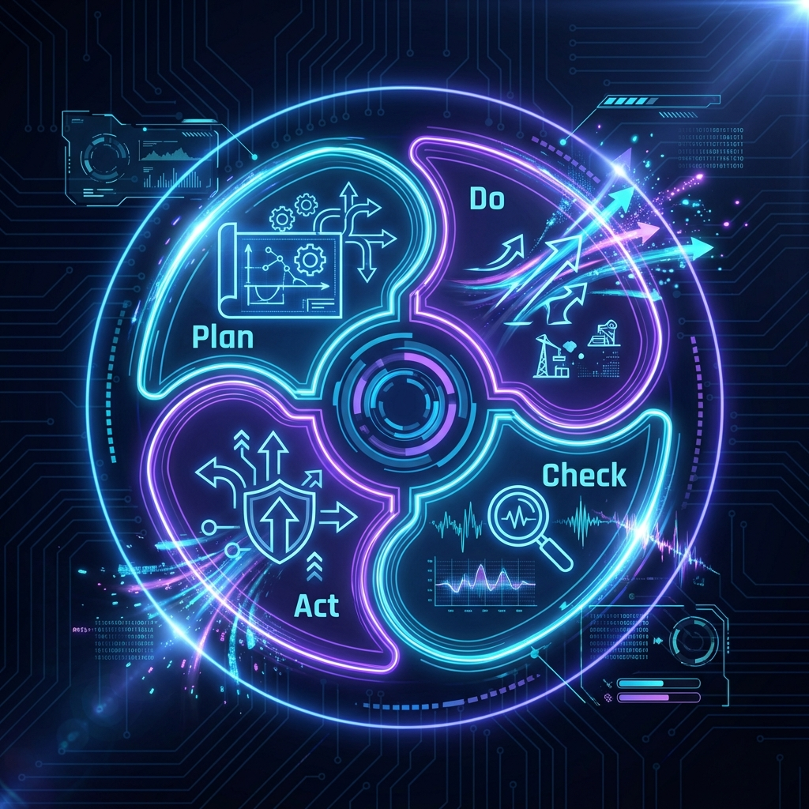

Betriebliches Gesundheitsmanagement
Semesterprojekt MP3
Das BGM Konzept
Der Podcast orientiert sich am PDCA-Zyklus (Plan-Do-Check-Act) und wendet diesen auf den E-Sport an.
Über das Projekt
Dieser Podcast entstand im Rahmen des 1. Semesters "Angewandte Gesundheitsförderung". Er beleuchtet die Aspekte des Betrieblichen Gesundheitsmanagements (BGM) am Beispiel des E-Sports und zieht Parallelen zur klassischen Arbeitswelt.
Podcast Skript
Teil 1: PLAN (Analyse & Diagnose)
Sprecher (Andreas): Willkommen zu "Gesundheit im digitalen Wettkampf". Wir
betrachten E-Sport heute als knallharten Business Case.
Die Diagnose (Cyber-Athletics):
1. Physisch: 70% leiden unter Nackenbeschwerden. RSI-Syndrom gefährdet Karrieren.
2. Psychisch: Kaum Melatonin durch Blaulicht, HRV im Keller, Cortisol-Spikes. Der
"Reboot" fehlt.
3. Ernährung: Abhängigkeit von Energy Drinks führt zu Insulin-Spikes und kognitiven
Abstürzen.
Teil 2: DO (Intervention & Bio-Hacking)
Sprecher (Andreas): Wir setzen auf Verhältnis- und
Verhaltensprävention.
Verhältnisprävention (Hardware-Umgebung):
- Micro-Resets: Software sperrt Bildschirm alle 45 Min für Zwangs-Stretching.
- Lichtarchitektur: Biodynamisches Licht reduziert Blaulicht ab 20 Uhr.
- Analog-Room: WLAN-freie Zone für echte Erholung.
Verhaltensprävention (E-Sport-Führerschein):
- Ernährung: Continuous Glucose Monitoring (CGM) für stabile Konzentration.
- Stress: Box-Breathing (4-4-4-4) gegen "Tilt".
- Leadership: Regeneration wird zur Arbeitszeit erklärt.
Teil 3: CHECK (Evaluation & KPIs)
Sprecher (Andreas): Nach sechs Monaten:
Harte KPIs:
- HRV um 15% gestiegen.
- Reaktionszeit-Stabilität bleibt auch abends hoch.
Weiche KPIs:
- Audio-Toxizität im Voice-Chat um 30% gesunken.
Fail: Der Analog-Room scheiterte am "Dopamin-Entzug" und FOMO.
Teil 4: ACT (Transfer & Abschluss)
Sprecher (Andreas): Wir justieren nach. Gesundheit wird vertragliche
Performance-Metrik.
Transfer auf die Arbeitswelt:
Wir alle werden zu "Büro-Athleten".
1. Regeneration ist Leistungsvoraussetzung.
2. Daten lügen nicht (objektives Messen).
3. Führung muss gesund machen.
Cyber-Athletics zeigt: Digitales BGM ist möglich. Bleiben Sie gesund.
Show Notes
- Diagnostik: Einsatz von biometrischem Monitoring (Wearables) zur Messung von HRV und Schlafqualität.
- Intervention: Healthy Leadership und Führungskultur sowie Maßnahmen wie kontinuierliches Glukose-Monitoring und Breathwork.
- Evaluation: Messung des „Return on Prevention Investment“ (ROPI) durch Performance-KPIs.